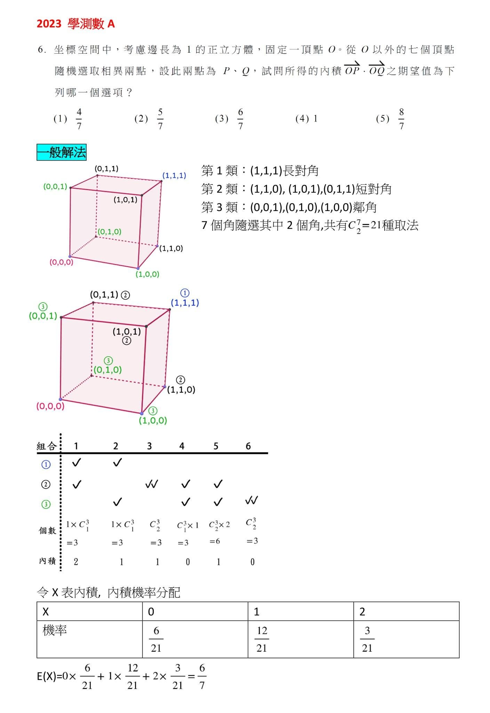
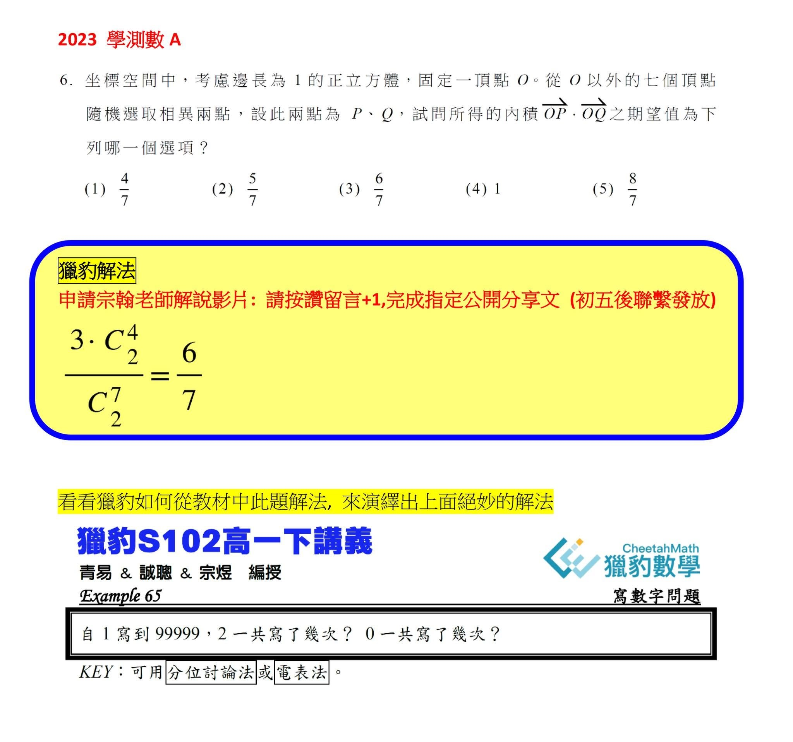
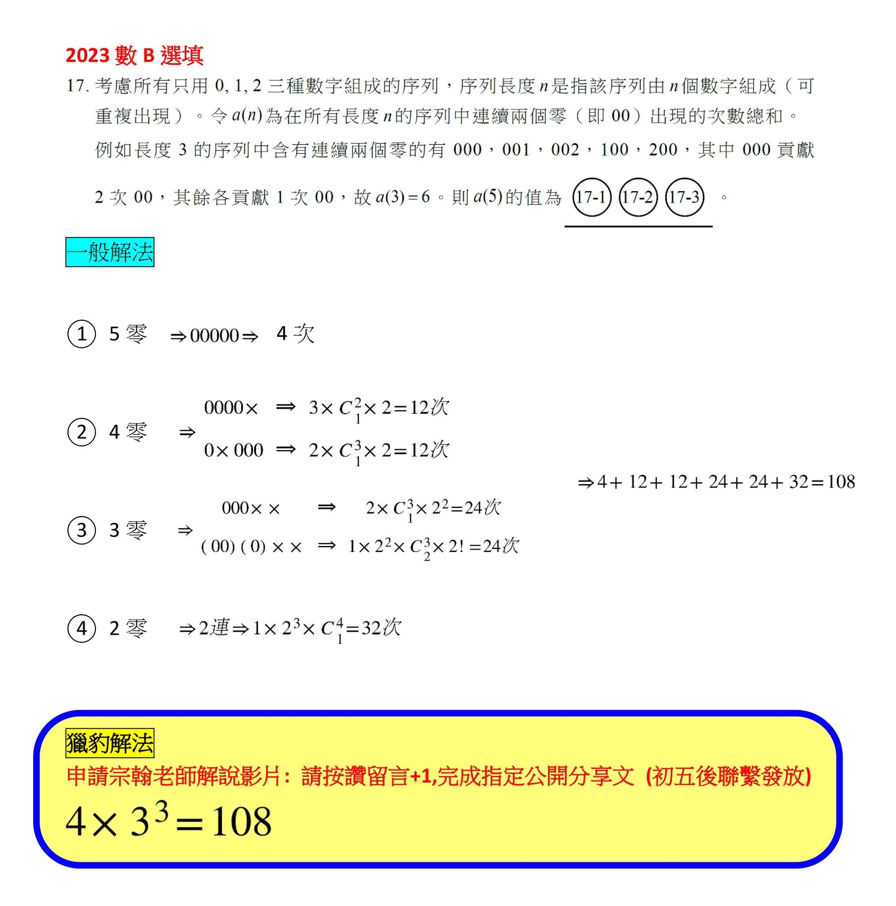
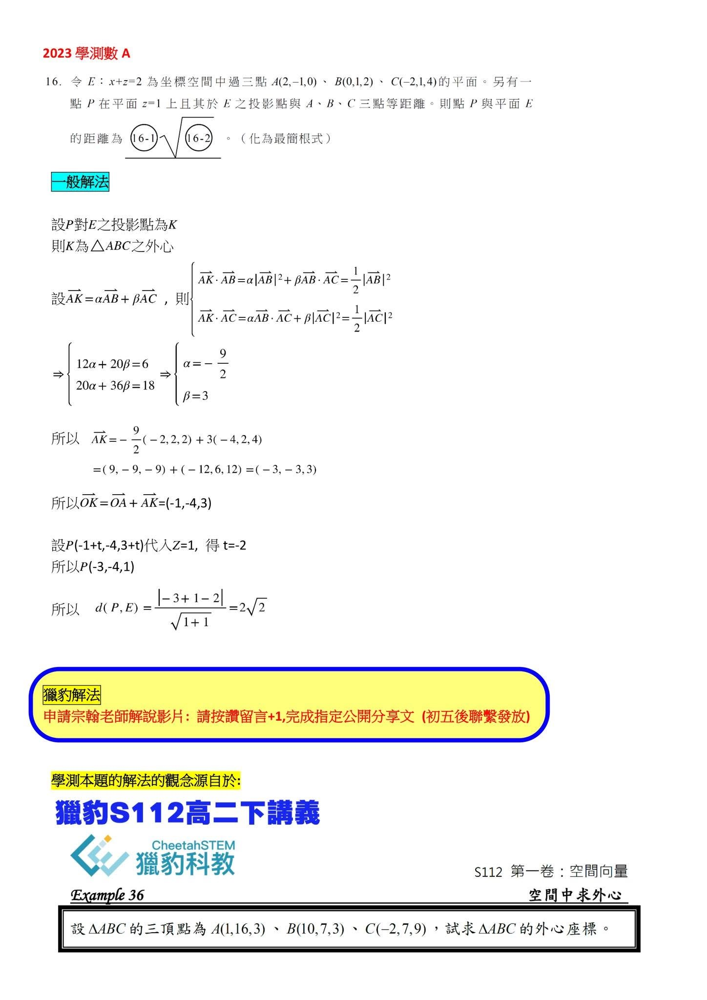
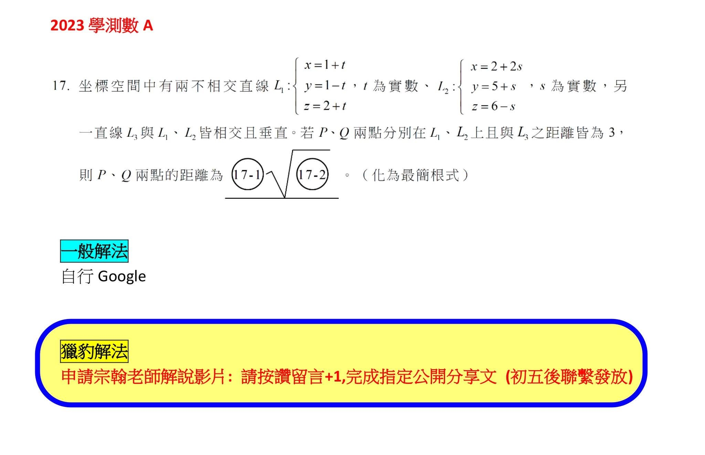

獵豹高手秒解112學測數學壓軸題～解難題的速度不在熟練而在「觀點」！
～學習AMC 是大學學測滿級分的終南捷徑
112年大學學測剛落幕，數學科A卷難度明顯地比去年下降，題目的品質不錯，知識點分佈均勻、難度配置適當、鑑別力高，題目設計用心，重觀念而少套路。
其中有幾道出得漂亮的壓軸題，是獲得高分的關鍵！
以單選第六題為例，這道題並不困難，但卻讓許多程度不錯的學生栽了跟斗。
原因是他們都採取標準制式的解法，用窮舉的方式列舉討論（目前在YT上我們看到的所有老師示範解題方式也都是如此）。
標準解法是採取期望值的基本定義，觀念雖正確但計算繁瑣，在大考緊張的氛圍下，步驟繁瑣且需要細心分析的題目常是影響得分的關鍵（採取標準解法的，在計算隨機變數對應的機率時只要算錯一項便全盤皆墨了）。而且一旦花費時間太多必定壓縮後續的解題時間，也因增加緊張情緒而導致失常。
時常有家長來詢問，是否只能靠「刷題熟練」來提升解題速度？然而與大家想像的不同，對於非制式套路的靈活題型，解題速度的提升在於「觀點的高下」而非「熟練」！
而「觀點的高下」是數學實力的真實展現！
獵豹一再強調的「高手思維」在這類問題中便見真章！
如果上過獵豹課程的同學應該感覺到這道題目有「濃濃的AMC味道」。
在下圖中我們展示坊間補習班老師示範P6的標準解法。
而獵豹也提供了我們一刀斃命「秒解的高手思維」（洪誠聰老師提供）！
大家解這道題都是採取「解析幾何」的觀點，而獵豹採取的是「組合學」的觀點。
獵豹將提供本次學測四道壓軸題的高手思維影音講解(數A三題+數B一題)，示範如何利用獵豹教材的觀念引導出絕妙的解法，歡迎大家索取。
索取影音+課後筆記:
費用：NT$500/人，可觀看1個月
優惠：本文按讚留言+1，並完成指定分享文，可免費索取。
（初五後聯繫發放）




